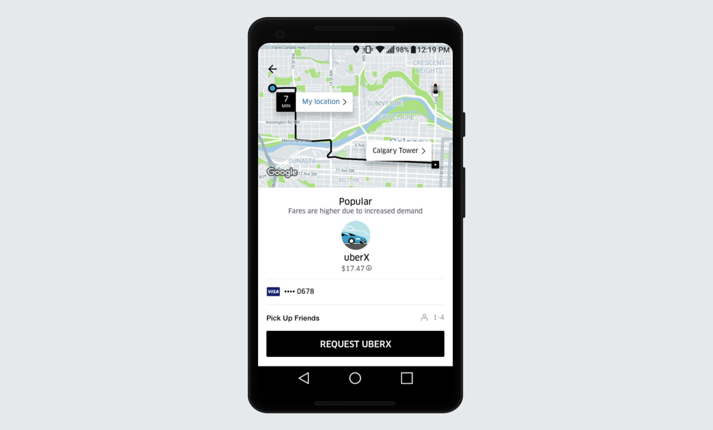
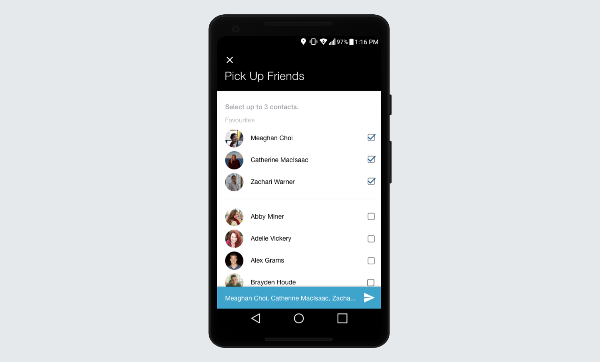
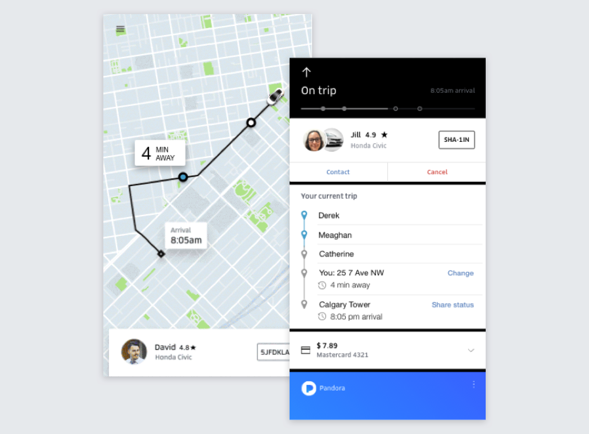
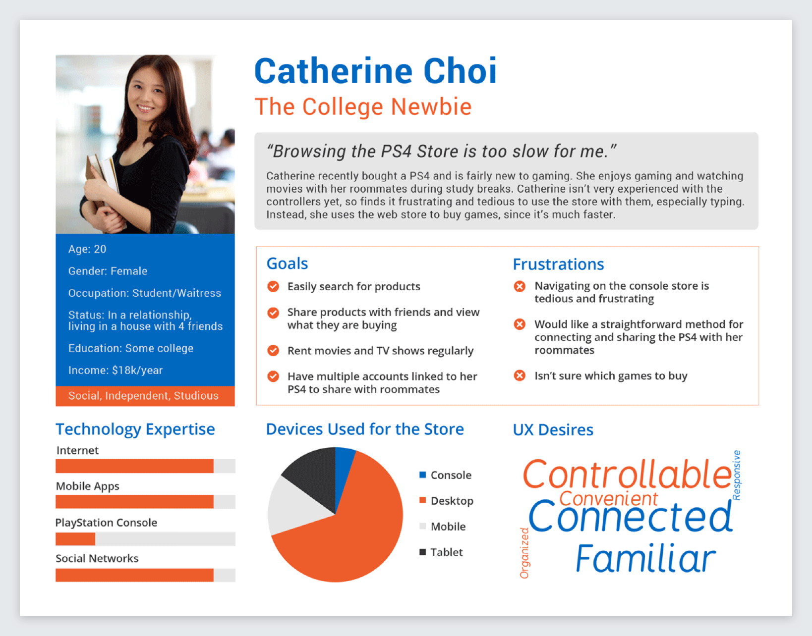
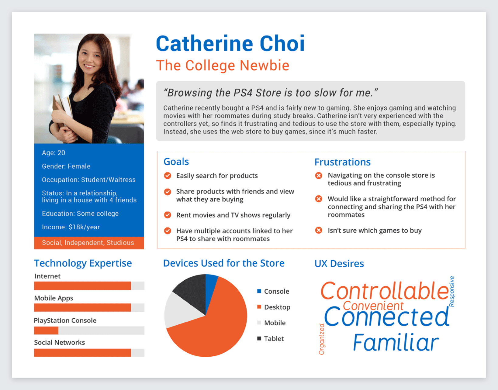
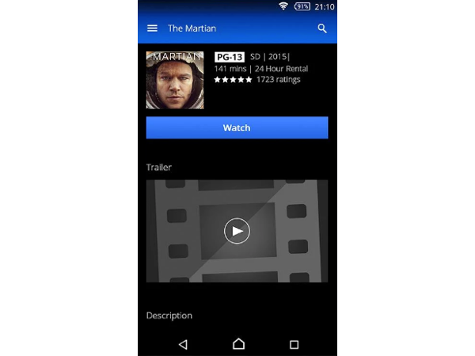

-
Busypoint
An app for users to find wait times at various establishments through an image processing solution.
×Busypoint
In 4th year, we had a capstone design project that lasted over the course of 7 months. Our group of 5 chose to, "Design a system that calculates real-time, numerical waiting approximations for locations of interest, providing users with greater control over how long they spend waiting in line." After analysing various concepts, we chose to take an image processing route, using cameras and an algorithm to calculate the wait time at establishments. This information is then outputted to a mobile app, where users can see these wait times. My job was to completely design the application.
User Surveys
First, I conducted surveys for both businesses and customers, receiving over 350 responses. The customer survey can be viewed here and the business survey is here. Some key findings were that:
- 94% of respondents take estimated wait times into account when planning
- 64% of users at least occasionally leave lines because they’re too long
- Respondents were most interested in wait times at restaurants and tourist attractions
- People showed a strong desire for both real-time and predicted wait times
- 86.8% gave at least a 3 for comfortability with cameras
User Requirements
Based on the user surveys, I came up with user requirements, both from a business and customer perspective. While customers are primary users, the businesses are key secondary users. The full list is here.
Storyboards
I then drew 4 storyboards detailing the various use cases of the app.
Personas
I then created 3 personas representing common users we would likely have: a business woman, a university student, and a traveller.
Sketches
After creating a feature use table and workflows, I sketched several variations of the app's pages. I focused particularly on the home page, since this page has the most open-ended functionality, and has a lot of impact on the user. Some of the sketches are shown below.

User Walkthroughs
I performed user walkthroughs with 5 people to find out which prototype was most user friendly. These walkthroughs were fairly casual, and involved asking the users to walk through the paper prototypes and describe how they would use the app. The following knowledge allowed me to decide on what direction the app should take:
- The Home version with Search as the most prominent function was most liked
- People are most likely to use the Search function because they would have a place in mind and want to see how long the line is
- Search was followed by Favourites, which would be used to save a few of their most visited places
- People liked having the option to browse with the categories, but would use it less frequently
High-Fidelity Mockups
I then created a first round of high-fidelity mockups in Sketch. The app is somewhat Yelp-like in features, with searching functionality, browsing by category, business info, reviews, etc. The obvious addition is the wait times. Because of time limitations, we decided to just focus on current wait times for now. Users can also save venues, or set alerts to receive notifications when a wait time exceeds or is less than a certain length. The home page, business page, and favourites page are shown below.
User Testing
Once the mockups were complete, I performed talk-aloud user testing with 5 separate participants. I asked them to perform and narrate various tasks while I recorded their actions. The full test script can be viewed here. Overall, the tests were very successful, with the benchmarks of a 100% task completion rate and 80% error-free rate being exceeded. There were very few problems that needed fixing. Some key info the tests revealed were that the app needed to be more vibrant, wait times should be prioritized on the business pages, and saved and alerts features should be more discoverable.
Final Version
Based on the user testing, a new visual design route was taken. I chose brighter colours to make the app more vibrant, and the Raleway font to give the app a more fun, while still modern and minimalist, feel. I also moved the navigation to a bottom bar, so that it works on all platforms. This also makes the features more discoverable since the Saved and Alerts pages are immediately viewable at the bottom, without having to explore the app.
The home page includes search, a carousel of saved venues for quick access, and popular categories to browse by. This order was determined by the user priorities found in the user walkthroughs.

Below are various listing pages, which can all be navigated to from the home page. Search Results, Saved, and Category results all share similar venue lists that provide the most imporant business info to retain consistency.
Below is the business listing. The wait time has been moved to the top since users thought this was highest priority. The page also includes contact info, photos, reviews, similar places, a save button, and the ability to set an alert.
From the business page, the user can tap on the bell to receive notifications when the wait time reaches a certain point. This page required a fair amount of iteration to determine what type of controls are optimal. Eventually I chose a combination of checkboxes, segmented controls, and dropdowns. Users had no difficulty using these controls in user testing.
The user can also view their alerts in the Alerts page. Here, they can switch alerts on and off, similar to how most alarm clock apps work.
Lastly, is the Categories page. Here, the user can see a list of all the categories venues fall under. This page can be accessed from the Categories tab or the "See More" button on the Home page.
-
Safety Check
My 3A design project was a system to detect hazardous gases in the workplace and relay the data to the user as well as managers via a mobile application.
×Safety Check - 3A Design Project
In my 3A term, there was a 3 month-long group design project, starting from finding a problem to developing a functioning prototype. The constraint was that the project had to utilize the Internet of Things. Our group was also given the category of Industrial Controls to work with. We created a wearable system that detects hazardous gases on oil and gas work sites and relays the information to both workers and managers via a mobile application. A demo of the prototype is here.
Problem Statement
We decided to focus on the oil and gas industry for our project, since it is extremely relevant to the Canadian economy, as well as the topic of Industrial Controls. I interviewed a variety of people in the industry, including field workers, field supervisors, and higher up managers regarding safety issues on site. From these interviews, we found that H2S, a toxic gas, is still a major safety concern, since it can be fatal if exposed to it. This led to the development of the following problem statement.
In current oil and gas industries, numerous employee illnesses and injuries arise as a cause of unsafe working conditions. Through the use of sensor detection, various unsafe conditions regarding toxic gases, temperatures, and air quality can be addressed before harming workers. Although there are current solutions, such as employee training and alarm systems, these methods prove to be ineffective as the number of injuries and illness have not been eliminated. Thus, this issue still remains and must be addressed.
Current State of the Art
Currently, it is mandatory to go through H2S safety training before entering an oil/gas work site. It is also common for workers to wear personal safety monitors, which detect various gases and alert the wearer through beeping and/or vibration. However, the problem with these, is that they don't alert other employees and managers of the issue. The worker must then report the issue, which often does not happen. Poor communication and lack of reporting up, often leads to gas leaks not being fixed in time. Also, other employees are not aware of the detection, so may come across it themselves afterwards. There is no reliable documentation of issues. Also, the devices do not communicate with one another, which can prevent necessary assistance from occuring during emergencies.
Customer Needs
Primary
- The device detects potential hazards such as toxic gases.
- The device reduces the emergency response time to hazards.
- The device does not cause discomfort or interference with worker’s duties.
- The device operates for a long period of time before recharging or maintenance is required.
- The device is able to connect with other nearby devices.
- The device predicts the possibility of hazards in real time.
- The product requires minimal training for use.
- The device is reliable.
Secondary
- The system stores hazard detection data for future reference.
- The device is scalable to numerous employees.
- The device meets Technical Standards & Safety Authority (TSSA) and any company regulations.
- The critical data communicated by the devices is visible at all times.
- The device alerts all the workers about emergencies and safety procedure.
Latent
- The device is usable in various weather conditions.
- The device is easy to replace or upgrade.
- The device can be reused by different workers.
- The device is easy to install.
- The device can be manufactured at minimal cost.
Concept Generation
A variety of concepts were brainstormed and analyzed. These included biometric measuring, a drone monitor, an automated lockdown procedure, and gas neutralization. The final concept decided upon was a wearable device which monitors hazardous gases (i.e. hydrogen sulfide, carbon monoxide, methane), communicates with a central system, and provides workers with alerts for any hazards in the workplace.
App Design
My primary role at this point was to design the mobile application. A mobile app was decided upon, since all field workers always have a phone on them.
To decide on the app's architecture, I created the following table, after brainstorming features.
Based off of this, I created user flows, one of which is shown below.
After many sketches and iterations, the final version for this class was created. Orange was chosen as a primary color because of its strong association with safety. Blue was also chosen for its calming effect. Cards were used to distinguish between different hazards, containing critical info. Each one is colour coded to display the severity rating. Various levels are determined and set by existing safety regulations.
The dashboard is the app's main page. It displays the user's safety status, based on gases that have been detected near them and their severity. Below, it shows the gases recently detected that are affecting this status.
Each hazard can be tapped on to see details, such as the recommended safety procedure, predictions, and the location it was detected. Users can also add notes regarding the hazard.
The user can see all the gases detected on their site. These are viewable in list, map, or graph form.
The icon in the top right corner opens a side navigation, which displays all the workers on site, as well as provides the ability to contact them.
Supervisors also have the ability to view all the work sites and their current safety status.
Users can also view the history of gases that their personal monitor has detected.
Lastly, the side navigation is shown below.
Prototype
The prototype consists of a wearable device connected to a mobile application via the Internet of Things. For testing purposes, alcohol gas was used, since using toxic gases would be dangerous at the demo. There was a radio frequency component which allows the prototype to have wireless communication between different devices and the base station. This is used to transfer the data from the sensing node to the base station. A screen is used to display the concentration of H2S and Alcohol Gas in PPM on the device. An Arduino Nano is used to gather the sensor data, interface with all communication and visual components. The Arduino Nano also has basic logic which allowed onboard actuation. Alcohol gas and H2S gas sensors were included. A vibration motor and LED were also included to be used in conjunction to notify the wearer that a dangerous gas was detected.
The data collected by the wearable is then viewable on a user-friendly mobile application. On this application, the user can view their safety status, as SAFE, CAUTION, or DANGER, depending on the gas levels near them. The user can also see the history of all hazards at their worksite in list, map, and graphical form. Since there are often many worksites which workers travel between, they can view a list of the safety statuses of all sites, and easily switch between them. For each site, there is also a list of all of the workers on site, with the ability to call or text each worker. This ensures that no person is forgotten in the case of an emergency.
In case you missed it the first time, a demo of the prototype can be viewed here.
Future Improvements
This project had achieved a number of goals that were set at the initial phases of the design process. Two of the greatest successes in the project are outstanding functionality of essential components in the prototype and flawless execution of the prototype demonstration at the design symposium. The prototype was able to demonstrate, with a near 100% success rate, the capability to detect ambient concentration of alcohol, perform analytics on data received, and use IoT features to display information in an easily accessible format.
Some of the failures that were noted are incomplete functionality for the secondary objectives of the web application and the lack of a few desired features from the prototype. The entire functionality of the web application could not be completed due to time constraints, therefore a few links were inactive. This issue can be corrected by proceeding with the second phase of the design process which would be to address the secondary objectives of the product design. The desired features that were missing from the prototype were GPS tracking and LCD display for alcohol concentration. These could not be implemented due to hardware constraints of the Arduino Uno board. The number of input pins and power output required had exceeded the capabilities of the Arduino. Also, there was no time to conduct extensive user testing on the application. In future iterations, the app's design needs to be tested by actual potential users.
PlayStation Video iOS Design
One of my projects at PlayStation Network was to adapt the PlayStation Video Android app for iOS.
×PlayStation Video iOS Design
One of my projects at PlayStation Network was to adapt the PlayStation Video app for iOS. At the time, it was only available for Android. iOS design standards are different than Android's, especially due to the constraint of not having a built-in back button. Also, a business decision was made that videos would not be available for purchase in the iOS app, unlike in Android. This created a design dilemma on whether to include browsing in the app or restrict the app's functionality to strictly playback for videos purchased on other PlayStation platforms. My process involved research into differences between iOS and Android standards, journey maps to compare the two browsing options, several high-fidelity prototypes, and testing in InVision. My slide deck for my work is shown below. In the end, Variation 6 was chosen. Even though it is less of a native iOS design, it was most feasible to convert software-wise.
UberPool Party
I designed a feature for Uber that allows users to pick up their friends on the way to an event.
×UberPool Party
Currently, there is no real way in the Uber app to pick up/drop off multiple friends at various locations. I designed a feature to address this problem. A fully detailed pdf of the project can be viewed here.
Current State of the Art
Currently, there are several carpooling apps, but none of them let users select who they ride with. Instead, UberPool, Lyft Line, and Waze pair riders based on convenient routing. Frustrations stem from the current carpooling systems including confusion about how the system works, conflict between passengers, and time spent picking up other riders.
Alternatively, some users do pick up friends on Uber, although in an unofficial manner. Many users get around the lack of a pick-up feature by setting the destination to their friend’s house, and then changing the destination once the friend is picked up. This requires explaining the situation to the driver and continuously updating the destination. There is also no way to split the fare based on individual distance travelled, so the riders must split the fare equally.
User Interviews
I interviewed six Uber users via phone, asking questions mainly about how they use Uber to get to events. These interviews presented some key findings. Most users, particularly women, do not like showing up to events alone. They usually meet at one location then Uber to the event together, which can be time consuming. Some users already use Uber to pick up at multiple locations by changing the destination when they reach a stop and explaining the situation to the driver. This can be a pain to explain, since the driver doesn’t always understand. Users also said it’s a hassle to keep changing the destination.
Regarding the feature, people thought that the price should be split based on the distance travelled, since some riders may live much closer to the destination than others. Some users also voiced concerns that the feature would only be helpful if all party members lived en route to the destination.
Problem Statement
Current carpool methods do not allow for streamlined pick-up of the user’s acquaintances. The goal is to design a system where friends can Uber together from separate locations and split costs fairly.
Personas
Two personas were created, based on the stories of the users interviewed.

Storyboard
Next, a storyboard was drawn, outlining the most common use case for this pick-up feature.
User Requirements
A list of user requirements was made, which included being able to invite multiple contacts, invitees confirming pick-up before location is shared, being able to order the Uber even if a response is not received, and everyone being aware of the route and other passengers. More requirements can be seen here.
Workflow
Due to convenience and safety reasons, a system was designed where the trip organizer invites their contacts, and the invitees must confirm their address before being added to the group.

Prototype
After creating several iterations of sketches, a high-fidelity solution was created in Sketch.
Initiating Pick Up Option
The user first selects a final destination, as is usually done. Then, on the request page, if the user wants to pick up friends, they can tap on the Pick Up Friends button underneath Payment Methods.
Inviting Friends
After tapping on Pick Up Friends, a contact list appears. The user can select as many friends as will fit in the Uber. Friends that are frequently picked up will populate the Favourites list at the top. As friends are selected, a blue bar appears at the bottom, populated with the names of the invitees. This allows the user to easily confirm who they’ve selected, thereby preventing error. The user then taps on the paper airplane icon to send the invites.
Accepting an Invite
Once the request is sent, the invitees will receive a notification about the request saying something like, “Derek Dobslaw has requested to pick you up on the way to the Calgary Tower”. Upon tapping the notification, the following screen opens. The user can then see the other users invited and their locations, and the final destination. They can also change their location if desired. The user then either confirms or declines the invite, which is relayed to the other group members.

Group Status Page
Confirmed users, as well as the organizer, can keep track of the status of the group on the group status page. Once a user confirms, their given location appears on the map. The organizer can request the Uber at any time since a situation may arise where an invitee does not respond. If all riders have confirmed, however, any rider will be able to request the Uber.

Trip Route
Once all the users have confirmed their addresses and the Uber has been requested, Uber calculates the optimal route. The optimal route is not calculated until the Uber is requested because it also takes into account Uber car proximity/availability. Once the Uber is on its way, each rider can see the Uber’s progress and estimated arrival time at their location. They can also see the order of the stops combined with who has been picked up
PlayStation Recommendations
I designed a new recommendation system for the PlayStation Store during the semi-annual company Hackathon.
×PlayStation Store Recommendations
For the winter hackathon at PlayStation Network, my team chose to develop a better recommendation system for the PlayStation Store. Even though this project was primarily back-end based, it was determined that a well-designed UI had to be created for the demo in order to effectively present our project and its results to the judges. We ended up receiving an Honourable Mention award.
Problem Definition
The current PlayStation recommendation does not give helpful recommendations. It generally recommends the most popular games at the time, regardless of the user's preferences or the product being looked at. For instance, there were many children's games where violent games such as Call of Duty would appear as recommendations. The goal is to improve algorithm accuracy, and thereby increase sales via recommendations.
User Requirements
The main purpose of the demo was to demonstrate that the recommendations provided align with the games chosen. Since the UI was separate from the Store, a selection system was decided upon to replicate user's purchases. Therefore, the user had to be able to select multiple games. A search feature was also needed, in order to demonstrate that the recommendations can apply to any game, and not just the ones immediately populated. The user also needed to be aware of their choices while viewing their recommendations in order to emphasize recognition over recall. Some other key requirements were the ability to deselect, see what's been selected, and to clear all.
Wireframes
Several wireframes were developed, some of which are shown below.

Final Version
User selects the games they'd like to see recommendations for.
The tooltip allows the user to see the games they've selected.
Page of provided recommendations.
Results
By the end of the hackathon, the recommendations were considerably improved. This fact came across to the judges, and we received an Honourable Mention for the project.
PlayStation Store Personas
I created and designed 3 personas to be used long term for the PlayStation Store's design team.
×PlayStation Store Personas
One of my tasks at PlayStation Network was to create personas for the PlayStation web store. I researched why people use the webstore, rather than the console version, through interviewing users and reading online forums. I found that the 3 primary reasons were so people could buy items at work and remote download purchases to the console, so they wouldn't miss deals while on vacation, and because the PlayStation controllers are inconvenient for navigation. From this information, I developed the following personas. Each persona corresponds to one of the primary use cases. The color scheme of the personas is that of the PlayStation website.

 

Greek Council Website
I designed and developed the website for Greek Council, an organization at the University of Waterloo.
×Greek Council Website
Greek Council approached me during Summer '15, and asked me to create a website for them. The purpose of the website is to convey information about the club to ultimately gain new members. I aimed to present the organization with a balance of fun and professionalism, with plenty of photos to give a true glance into what being a member is like. The colors were chosen to match their logo. I also developed the website, using HTML, CSS, and a bit of JavaScript.
The site can be viewed live here.
PlayStation Video Trailer
The design of the Play Trailer feature in the PlayStation Video app.
×PlayStation Video Trailer
This was a small feature I did while working at PlayStation Network. The ability to watch a trailer had to be designed into the application, as well as the mobile web store.
A variety of low and high fidelity prototypes were created (unfortunately I no longer have most of them) which presented various options including buttons, tapping on the image, a trailer section, etc. One of the final iterations was the following.
Unfortunately, for various reasons, it was decided by management that a still from the movie could not be included. So, this version was iterated on to instead include a graphic, which I created in Photoshop. This led to the final versions for mobile and tablet below which are currently in production.